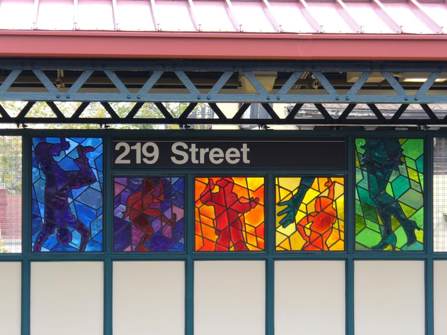

I'm sure you have been wandering underground in New York City and seen some of the amazing subway art along the way. But have you ever stopped to think about what it is that you see in front of you?
Abstract and floral arts are the top two categories of subway art in New York City. What's behind the popularity of these categories?
Have you seen me in the subway?
👀 Looking at MTA subway art by subject category 🖼️
This artwork is called "Homage", it has been installed in the 219th Street station since 2006. The train has opened since 1904, while the artwork was installed more than 100 years later.

Subway art is a unique form of public art that can be found in subway stations across the world. In New York City, the Metropolitan Transportation Authority (MTA) has a long history of commissioning and installing artwork in its subway stations.
The MTA's Arts & Design program has been responsible for commissioning and installing artwork in subway stations since the 1980s. The program has a mission to "enhance the transit experience for customers by integrating art into the design of transit facilities." As of 2021, there are over 300 pieces of artwork installed in MTA subway stations, ranging from murals and mosaics to sculptures and installations.
The artwork in MTA subway stations covers a wide range of subjects and styles, from abstract and floral designs to portraits and historical scenes. Some of the most popular categories of subway art include abstract, floral, portrait, and historical themes. "Homage" is an abstract artwork, which is the most popular category of subway art in New York City. By Joseph D'Alesandro, a New York-based graphic artist, "Homage" is a mosaic that features a colorful and intricate design that pays tribute to the history of the subway system.
Here's a sneak peek of the full picture of subway art in New York City.
The biggest category is abstract art!
Abstract art is the most popular category of subway art in New York City, with 156 artworks. Hover on the data points to see name, location, artist name, and year of installation for each artwork.
While, there are also many other categories including floral, humans, and cityspace.
Humans are also popular!
Humans are the second most popular category of subway art in New York City, with 90 artworks.
Explore every piece
Click on any data point in the chart to see more information about that artwork.
Where is the art?
Artwork is spread across all five boroughs — but Manhattan and Brooklyn account for nearly three-quarters of the collection.